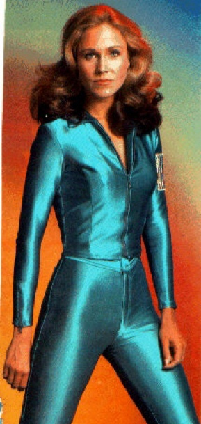

Favorite Sci-Fi, Fantasy & Horror Movies
Science Fiction & Fantasy
| Conan the Barbarian (1981) "Now they will know why they are afraid of the dark. Now they will learn why they fear the night." Angel Heart (1987) "Louis Cypher" A Clockwork Orange (1971) "I was cured all right." The Day the Earth Stood Still (1951) "I won't resort to threats, Mr. Harley. I merely tell you the future of your planet is at stake." Barbarella (1968) A quote? It had dialogue?? The Ice Pirates (1984) "I wanted him to be perfect" Ladyhawke (1985) "Sorry...I am a monk, not an architect." The Empire Strikes Back (1980) "Never tell me the odds" Logan's Run (1976) Dumb Movie - Great Dress! Blade Runner (1982) "I've seen things you people wouldn't believe. Attack ships on fire off the shoulder of Orion. I watched C-beams glitter in the dark near the Tannhauser gate. All those moments will be lost in time, like tears in rain." A Boy and His Dog (1975) A heart warming story Circuitry Man (1990) "You...you're driving me crazy" Buck Rogers in the 25th Century (1978) Of course there was a Movie Version. Dune (1984) "I am the Shaddat Mapes... the...housekeeper." Gorgo (1961) Irish Sea Monster Eats London. A Terrible Beauty is Born! Night of the Lepus (1972) The second worst Sci-Fi movie ever made. "Attention! Attention! Ladies and gentlemen, attention! There is a herd of killer rabbits headed this way and we desperately need your help!" Outland (1981) This is not the Sean Connery Fan Club Page It just looks that way. Plan 9 from Outer Space (1958) The worst Sci-Fi Movie ever made. "All you of Earth are IDIOTS!!" Saturn 3 (1980) Farrah's Greatest Flick Zardoz (1973) "We've all been used and reused..." "...and abused..." "...and amused!" |
 (Click on Barbarella for the full size version of this picture.The little bitty version doesn't do it justice.) |
{kind=link}
Spooky Stuff

|
The Silence of the Lambs (1991) "The world is more interesting with you in it." Dead Calm (1989) Psycho (1960) "A boy's best friend is his mother." Dr. Jekyll and Mr. Hyde (1941) Dracula (1931/I) "Listen to them.... children of the night... what music they make" Elvira, Mistress of the Dark (1988) "Unpleasant Dreams" (No...it isn't...but what a great picture!) Frankenstein (1931) King Kong (1933) "It was beauty killed the beast" The Mummy (1932) Wolfen (1981) |